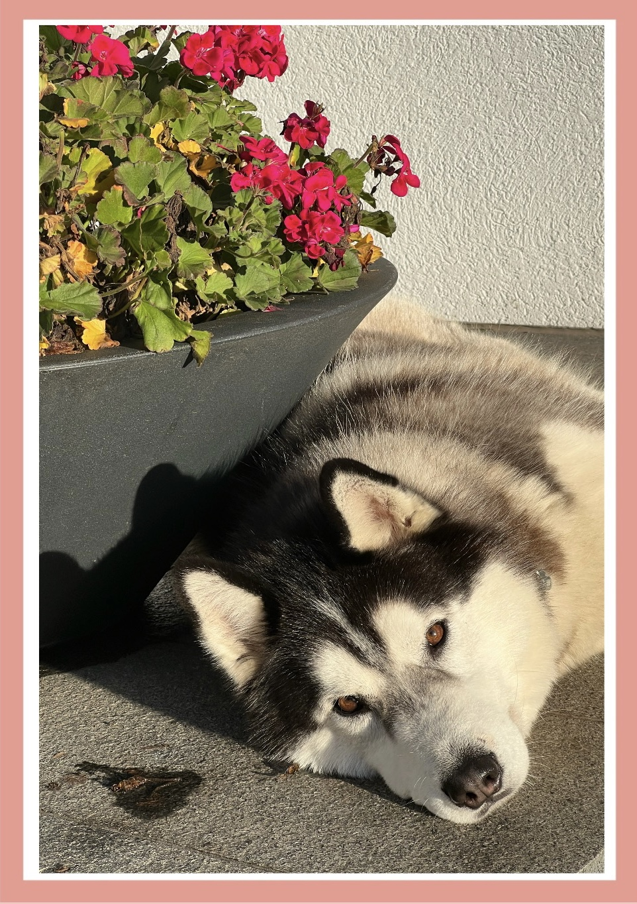
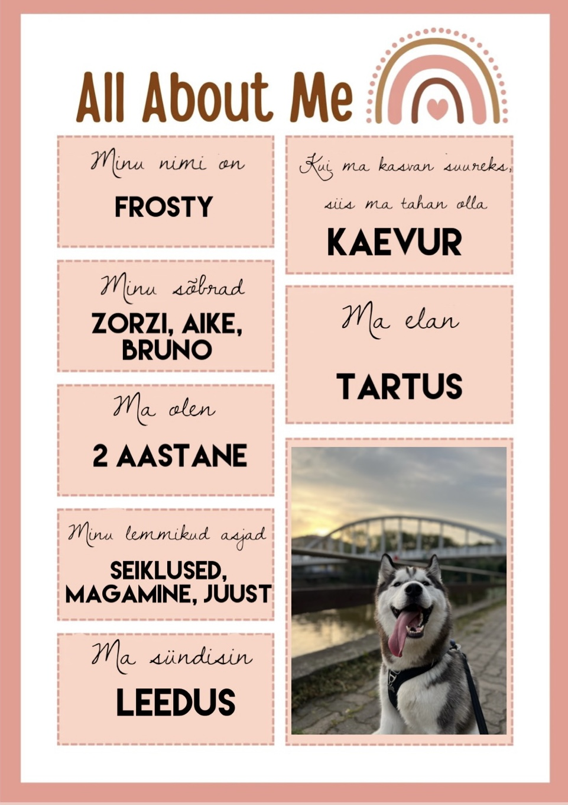
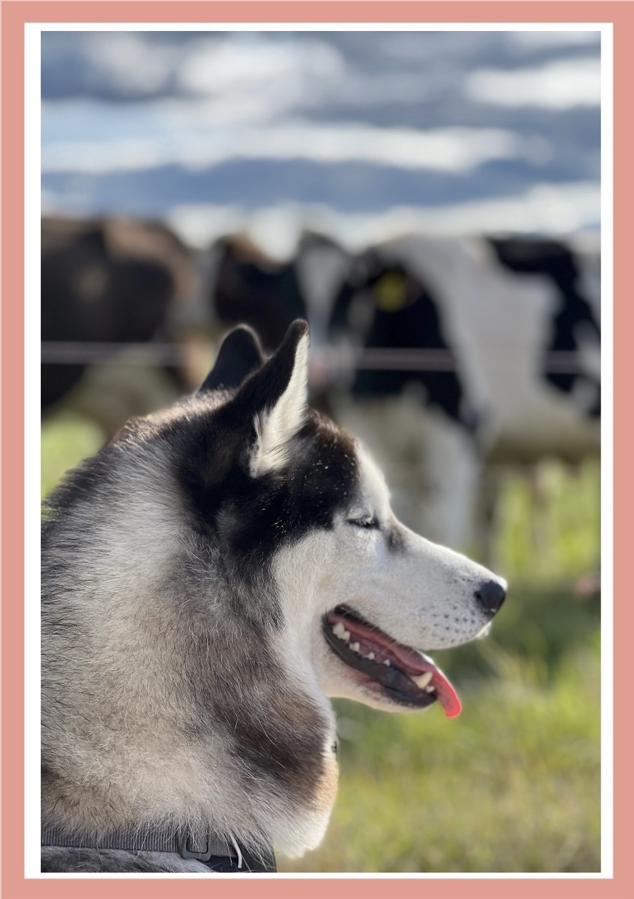

Frosty
💕
Ülimalt nunnu ja armas leedu huligaan
💕
  
🐺
Fakte lumekoerte ehk huntide ehk huskyde kohta
🐺
Huskyd aretati välja Siberis lumekoertena (Kuigi kelgu vedamine pole väga Frosty teema)
Husky tõug kogus kuulsust, kui 1925. aastal lumekoertetiim toimetas 600 miili kaugusele elupäästva ravimi
Nad on väga energilised ja sportlikud koerad (Tuletan siinkohal meelde, et Frosty üks lemmikutest tegevustest on magamine)
Huskyd on väga sõbralikud (Kui varas tuleks, teeks Frosty hea meelega talle ukse lahti)
Neil on kõige nunnumat värvi silmad: sinised, pruunid, mustad, valged
Kui neil on igav, siis nad võivad rändama minna (Frosty seda ei viitsi teha)
Nad on kõige targemad koerad (Frostyl oleneb päevast)
Huskyd on truud ja ustavad sõbrad kogu elu lõpuni